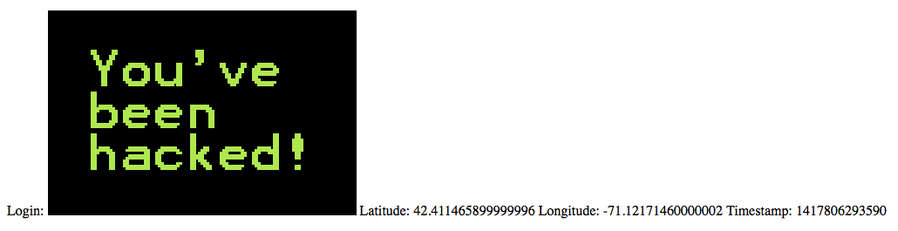
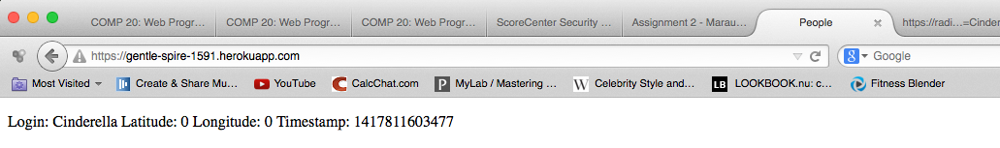
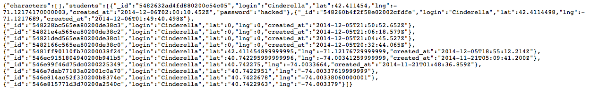

Marauder's Map Security Report
by Anzu Hakone
Introduction
This report accesses the possible client-side and server-side security risks and vulnerabilities of J. McCants’ “Marauder’s Map API” used in assignment 2 and 3. The API consists of 4 parts:
-
POST API (/sendLocation) - for the client to send their login name and geolocation (latitude, longitude). The Heroku database will store the input information as well as the date which the information was input into the database.
-
GET API (/locations.json) – clients can query a specific login name
-
GET API (/) – displays all checkins
-
GET API (/redline.json)– returns a live copy of MBTA location information from the MBTA.com website
Methodology
The testing was initially done as “black-box” test in which I did not look at the source code but used my version of assignment 2 Marauder’s Map to access his Heroku website. I then did a “white-box” testing in which I attacked the website after looking at his code. No security tools were used.
Abstract
All found vulnerabilities resulted from trusting the input of the clients. With the current version, attackers can input programs into the database which can then make the website behave according to the attacker’s program. Such programs can include one that automatically redirects the website to another malicious website. A less severe vulnerability is that the location of the user can be falsified by inputting incorrect latitude and longitudes. This will result in showing users at locations of the map that are different from where they actually are. Another security risk of high concern is that when you search a specific login name, all of the information for that login name can be shown. If the database contains passwords, addresses, and other personal information of a user, any outsider can view that information.
Issues found
JavaScript injection
-
Location: API POST (/sendLocation)
-
Severity: High – malicious code can execute and affect both client- and server-sides. Virus can be input into the database.
-
Description: The client can input HTML or JavaScript code (using string concatenation) instead of their login name. The code will run and may cause the page to do unexpected actions like showing inappropriate images, annoying pop-ups, redirecting the page to another malicious website, etc.
-
Proof of vulnerability: Doing
request.send("login=<img src=http://wisdomforawiredworld.com/wp-content/uploads/2013/03/Youve-been-hacked.png alt='hacked'\/>&lat="+ me.lat() + "&lng=" + me.lng());
will give you

-
Resolution: The login input can be checked so that input with common programming notations or data files cannot be input into the database. Ex.
"<script>", “.jpg” “.exe”
Incorrect geolocation latitude and longitude
-
Location: API POST (/sendLocation)
-
Severity: Low – This would affect the accuracy of the website but will not inject malicious content to the server or the client machine. h – malicious code can execute and affect both client- and server-sides. Virus can be input into the database.
-
Description: Since there is no checking involved in the client’s input of the latitude and longitude, the client can input a latitude and longitude that does not correspond to their actual location.
-
Proof of vulnerability: Even though your location is lat=40 and lng=-70, if you do
request.send("login=Cinderella&lat=" + 0 + "&lng=" + 0);
then you will get

-
Resolution: One possible solution is to check if the input latitude and longitude is within a certain range of the client’s IP location.
Successful querying results in showing all fields
-
Location: API GET (/locations.json)
-
Severity: High – if personal information such as passwords and addresses are stored in the database, these can be visible when querying with a valid login name.
-
Description: Since there is no checking involved in the client’s input of the latitude and longitude, the client can input a latitude and longitude that does not correspond to their actual location.
-
Proof of vulnerability: Even though the field "password" is not shown when accessing /index, the query of
?login=Cinderella will result in:

*** The first line shows the "password" as well as all of the other fields ***
-
Resolution: Instead of showing all of the key-value pair fields related to the given login name, we can specify which fields to show (i.e., show only login name, latitude, longitude, and time created).
Conclusion
Although the aforementioned securities risks and vulnerabilities exist in the Marauder’s Map API, the resolution recommendations are relatively easy to fix and requires very few lines of code. The incorrect geolocation latitude and longitude issue might be a bit harder to solve, only because it requires cross-referencing the client’s IP location to the input latitude and longitude. However, it is important to address these issues since, at worst, both the client and server can be subject to malware and other malicious content from attackers.